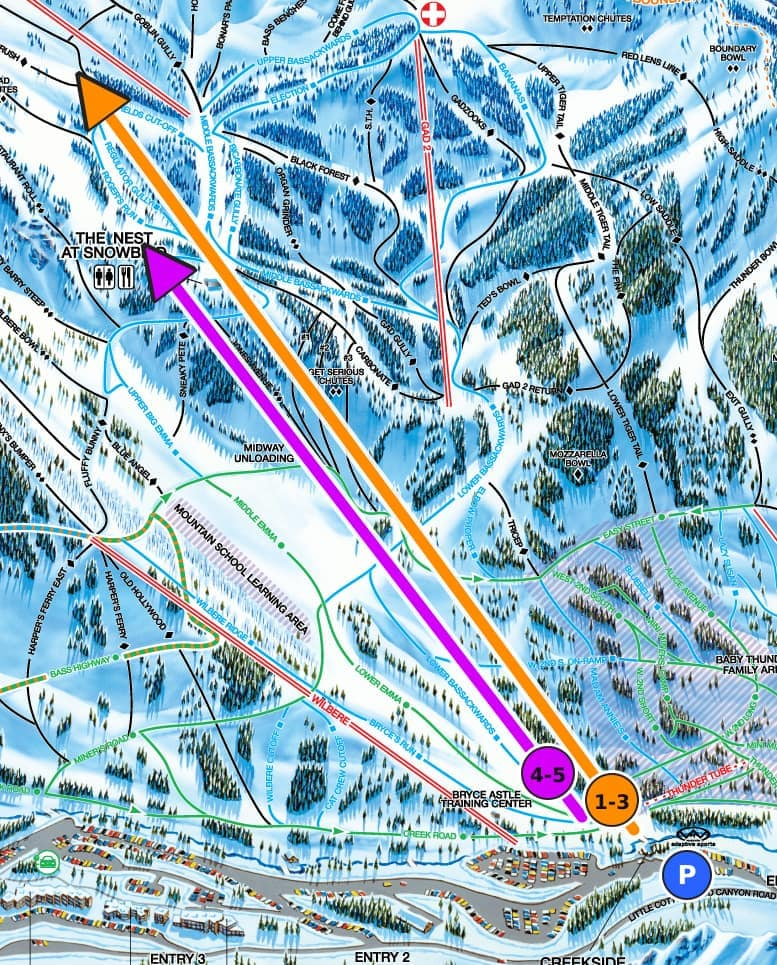
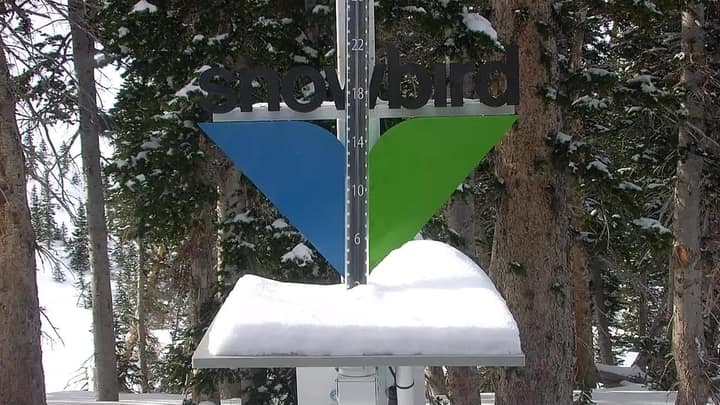
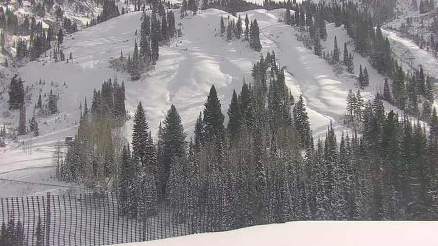
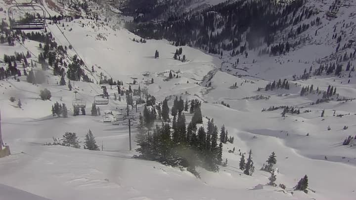
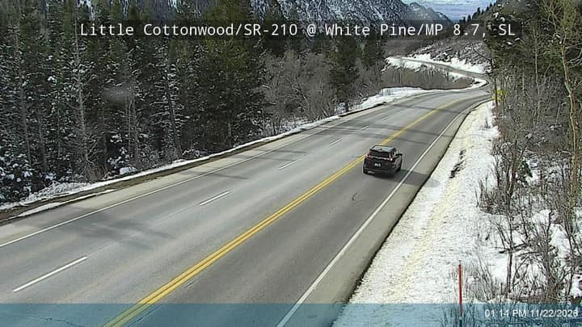
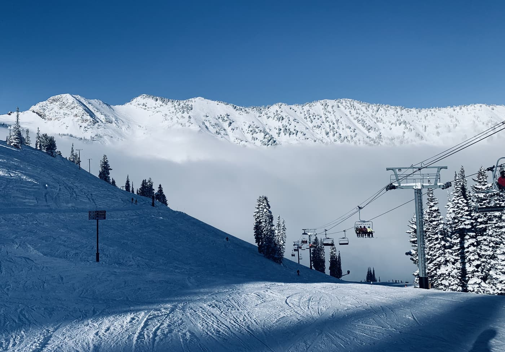

Our AI reads the snow, weather, avalanche, canyon road and parking data, then tells you whether to go, where to park and which lifts to lap for your level.
One email a day · Unsubscribe anytime
Your day, arrival time, level and terrain
Our AI reads every report before you wake up, makes the call, and builds a plan that gets the most out of every hour on the mountain.
GO, DECENT or SKIP for your ski window, so you never burn a day on bad snow or miss a great one.
Where to park, your first lift, a warm-up, then laps matched to your ability, from cruisy groomers to steeps, ending back at your car.
New snow, wind and afternoon sun pick the zone: Gad Valley, Peruvian or Mineral Basin.
Laps on lifts that share a base, the Tram only when it's worth it, and parking that's open when you arrive.
The conditions, the call and two game plans for the day. Here is a real brief from Nov 22, 2026, trimmed a little.
SKIPLift-served skiing isn't available yet. Snowbird is scheduled to open for the season on November 27.

| Snowfall, past 24 hours | 0" |
| Snowfall, past 2 / 3 days | 0" / 6" |
| Base @ 9,170 ft | 26" |
| Crowd estimate | Moderate (weekend) |
Uphill travel is closed for snowmaking, so stay off the mountain. Opening day Friday brings about an inch, with more substantial snow around December 1.
Utah's Wasatch will see small waves of snow around Nov 26-27 and Nov 28-Dec 1, with about a foot possible in the Cottonwoods by December 1.
Watch: Mountain Weather Update 11/22, Meteorologist Chris Tomer (YouTube)




Tell us when you're going and how you ski. We check the latest conditions and email a plan built for your trip.
Today or tomorrow, your arrival time, ski or ride, your level (learning, cruiser or advanced), about 2 hours or longer, driving or the UTA ski bus, and the terrain you love.
Our AI checks the latest snow, weather, avalanche, road and parking data for that day and matches the terrain to your level.
Where to park, your first lift, a warm-up, laps in order and when to head down, in a few minutes.

Yes. BirdBrief is free for the whole 2026–27 ski and snowboard season, including ski and ride plans on demand. It is a passion project by a Snowbird local.
No. BirdBrief is independent and isn't affiliated with or endorsed by Snowbird, UDOT or any forecaster it cites. Always check the official lift, road and avalanche reports before you go.
The Snowbird SNOTEL snow station and nearby stations, the National Weather Service, the Utah Avalanche Center, UDOT, Snowbird's public pages and cameras, and Chris Tomer's mountain weather videos, credited and linked in every email.
Snowbird first. Alta, Brighton and Solitude are next if enough of you ask.
We only use it to send your brief. No selling, no sharing, and every email has a one-click unsubscribe.
Both free all 2026–27 season.